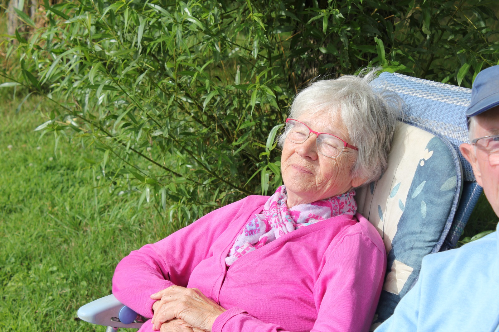
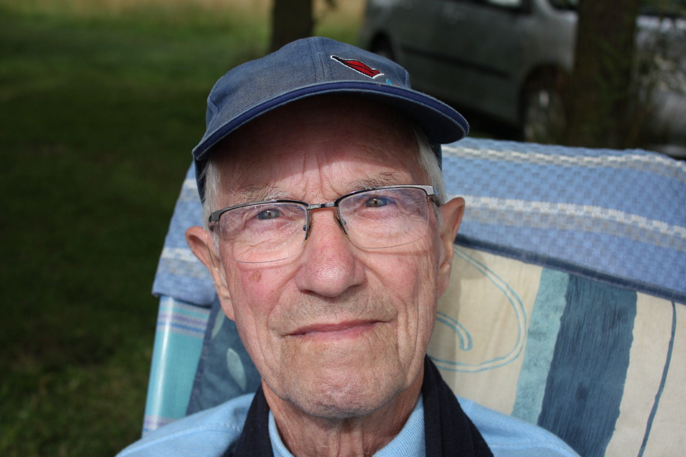

mail@voorbeeld.nl
Instarts bedenken
Bij ons op school volg je twee themavakken. Je kan dan kiezen uit verschillende soorten vakken die je wil volgen. Zoals televisie, documentairefotografie, magazine en radio. Voor de eerste periode heb ik gekozen voor televisie. Bij televisie moest je ideeën bedenken voor de aflevering die je wilde maken. Laat nieuwe dingen bedenken nou net mijn specialiteit zijn. Bij de eerste afleveringen moesten we gaan brainstormen zonder dat de docenten erbij waren. Ik had het voortouw genomen en pakte een pen. Ik liet iedereen aan het woord om zijn of haar idee te vertellen en ik schreef het dan vervolgens op. Zelf had ik ook met een paar mensen bedacht om een sociaal experiment te doen dus die stond ook op ons lijstje. Dit hebben wij uitgewerkt. We hebben bedacht om boeken te laten vallen en te kijken of mensen gingen helpen en hoe ze daarop reageerden. Ik wilde graag de rol op mij nemen om de actrice te zijn. Op mij werd een bodycam bevestigd zodat we verschillende beelden konden krijgen. Voor de tweede aflevering hebben we veel nagedacht over wat we gingen doen voor de muziek pop vox. Ik had bedacht dat wij een spel gingen maken dat mensen een stukje van een kerstliedje te horen kregen. Vervolgens moesten ze raden welk liedje het was. Het idee was goedgekeurd door onze docent nadat ze ons nog wat feedback had gegeven dat we rekening moesten houden met Copyright en dat we goed moesten nadenken over onze doelgroep. Ik wilde mijzelf uitdagen en besloot de presentator te worden van de instart.
Instart 1
Instart 2
UITWERKING HIER!!!!!! Hier zie je de uitwerking van mijn idee. Dit was de eerste keer dat ik ging presenteren. Dit vond ik spannend, maar ik wist dat ik dit prima kon. Helaas hou ik de microfoon in de verkeerde hand waardoor ik een gesloten houding heb. Beginnersfoutje. Heb er nu wel van geleerd om het in mijn goede hand te doen.
Natuurlijk wilden wij onze aflevering promoten. Daarom hebben wij een TikTok video gemaakt zodat dit meer kijkers konden trekken.
Interviews
Interviewen is een groot hoofdstuk in de opleiding redactiemedewerker. Wij interviewen voor video's of voor tijdschrift/magazine. Ook voor radio en podcast interviewen wij veel. Op straat afstappen op mensen moeten wij ook vaak doen. In het algemeen komt u veel interviewen tegen in mijn gehele portfolio, maar ik zal hier nog een paar fragmentjes zetten.
Opdracht 1
Ik heb een podcast gemaakt over vrouwenrechten. Hiervoor heb ik een mevrouw geïnterviewd (Marjo) die zelf in heel veel opstanden heeft meegelopen en ook veel weet over de acties van de Dolle Mina's. Voor deze opdracht had ik een 9.8 gekregen — erg blij mee.
Podcast:
communicatie en sociale media content
Opdracht 1
We moesten voor een opdracht een nieuws video maken. Voor mij is het milieu altijd erg belangrijk en heb ik dus gekozen met een vriend van mij om een nieuws video te maken over luchtverontreiniging. Hiervoor speelde ik een wetenschapper en ging mijn vriend mij interviewen. Ik vond het erg leuk om hierbij een edit te maken. Edit maken nou eenmaal veel indruk. De video begint daarom ook met een edit die ik heb gemaakt.
Voor deze opdracht moesten wij ook een Storyboard maken.
STORYBORD HIER!!!!!!!!!!!!!!!!!!!En er moest onderzoek naar dit onderwerp gedaan worden. Daarom had ik verschillende bronnen gezocht die ons veel informatie hier over konden geven. Ook had ik er een quote bij bedacht: The sky is not the limit.
THE SKY IS NOT THE LIMIT HIER !!!!!!!!Opdracht 2
Bij een quote die je leuk vond moest je een bijpassende video maken. Dit deden we in groepjes van drie. Wij hadden gekozen voor de quote: Good Friends Don't Let you do stupid things... alone. Hierbij maakte we een video over onze vriendschap. Al deze scenes heb ik bedacht.
Opdracht 3
Een opdracht die ik heb gemaakt bij communicatie is een sociale mediacampagne. Ik had gekozen om dit in mijn eentje te doen, want ik wilde dit graag over mijn favoriete sport karate doen. De opdracht was content maken voor sociale media. Je moest doelen stellen die je uiteindelijk wilde behalen en afsluiten met een pecha kucha presentatie. Dat houdt in, een PowerPoint met alleen foto’s en video’s, zonder tekst.
LOGO TIKTOK HIER!!!!!
dit was ons logo
HUISKLEUREN HIER!!!!!
Hier vertelde ik over mijn huisstijl.
MAGAZINE
MAGAZINE PDF LINK
Ook heb ik het themavak magazine gedaan. Dit themavak hield in dat we twee of drie artikelen moesten schrijven waarvan 1 een interview was. Onze artikelen hebben wij ge-edit in Adobe InDesign.
Hier ziet u artikelen die ik zelf heb gemaakt, de eerste (Must listen to) op basis van een interview dat ik heb afgenomen.
Bij dit artikel wilde ik mensen informeren wat muziek met je doet tijdens het sporten. Ik heb hierbij zelf symbolen gemaakt.
Mijn Boek
Ja, mijn boek. Daar vertel ik altijd met trots over. Met dit project ben ik al lang bezig. Er blijven maar nieuwe ideeën komen dus blijf ik maar door schrijven.
Mijn boek is fictie en speelt zich af in een oude tijd. Het verhaal begint bij twee karakters die met veel andere vastzitten op een kostschool...
Hier ziet u mijn moodboards van twee karakters:
Fotografie
Je kon een onderwerp kiezen dat documentairefotografie heet...
Sigarettenvervuiling: Op deze foto ziet u een berg sigaretten.

Overvolle vuilnisbak: De vuilnisbakken hier zijn overvol en er waait veel weg

Uiteindelijk heb ik al mijn foto's afgedrukt...
Opdracht: foto's maken van gebouwen: Het was een regenachtige dag...

Opdracht: Lijnen zien

Opdracht: Verboden toegang: plaatsen waar je niet mag komen.


De wereld zien door één oog

Opdracht: gezicht uitdrukking
 Short Movie
Het maken van een film: dat is iets wat ik heel leuk vind...
De Short movie:
Het Werk Erachter
Eerst ging ik het verhaal opzetten.
Short movie: Ik zal winnen
Het verhaal
Twee jongens, één winnaar. Quin en Mick hebben beiden hun reden waarom ze willen winnen...
Mick staart Quin met zelfverzekerdheid en een grote druk op zijn schouders aan...
Verder heb ik al mijn aantekeningen op papier gemaakt...
AANTEKINGEN PAPIER FOTO HIER!!!!!!!!!!!
Waar ik tegen aanliep tijdens dit project was toch wel dat ik te veel tekst had...
Inventarisen
1. Als je het mapje opent zie je dat ik 3 verschillende dagen heb gefilmd...
2. Hier zie je alle scenes van dag 1
Crossmediale campagne
Een crossmediale campagne maken was een eindexamenopdracht...
FOTO DE WERELD VAN FAST FASHION TITELPAGINA
PDF LINK CROSSMEDIALE CAMPAGNE
Vervolgens moest je drie uitgebreide artikelen schrijven...
Hier de bijbehoren de video en callsheet/script
Gedicht 1 Uitleg
Van jongs af aan is voor mij een ding altijd erg belangrijk...
Gedicht 2 Uitleg
Ik hou ervan om te leven...